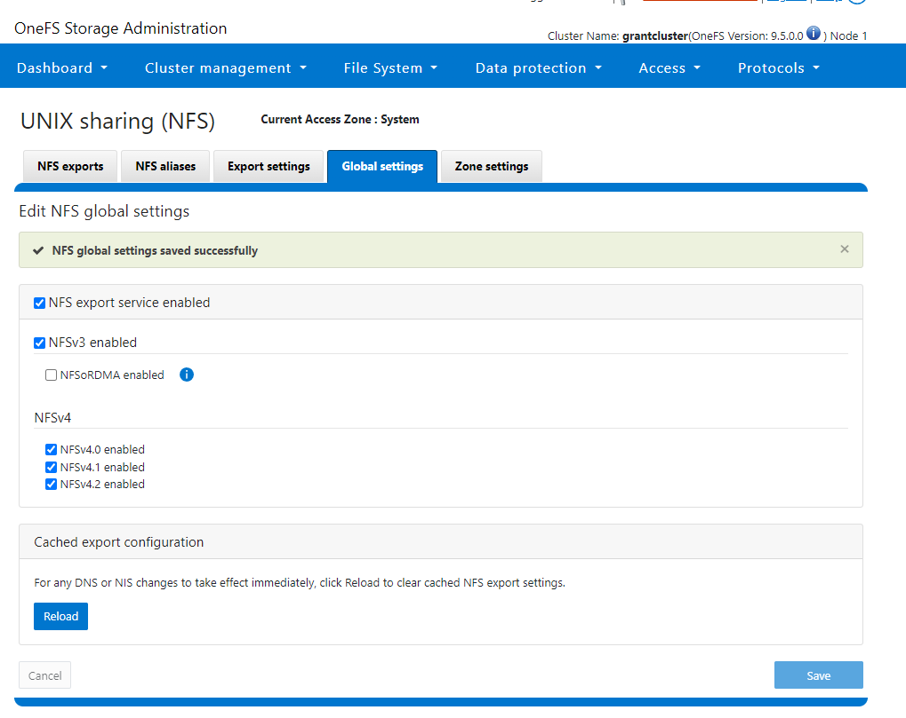
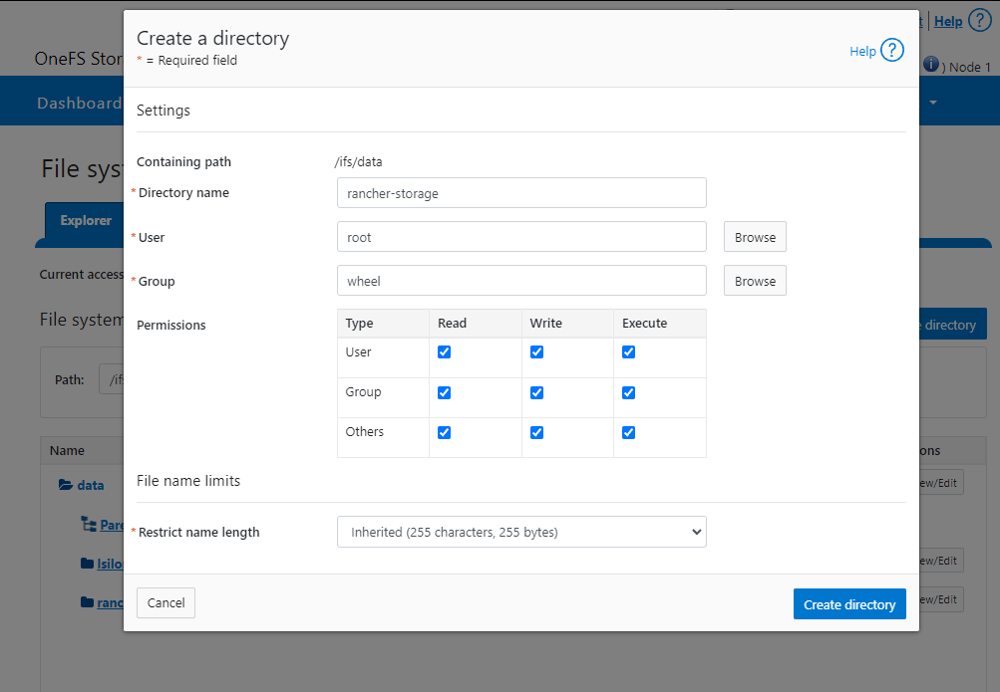

PowerScale - Configure with Kubernetes
RKE2 advertises itself as an automatic K8s installer. That is... sort of true based on my experience. It is certainly simpler than what I had to do 7 years ago, but significant assembly by someone who knows Kubernetes and networking was still required.
- PowerScale - Configure with Kubernetes
- My IPs
- Install RKE2 on Server
- Set Up a K8s Node
- Install Helm
- Install Cert Manager
- Install Rancher
- Install a Load Balancer for Bare Metal (metallb)
- PowerScale
- Troubleshooting
My IPs
- K8s Master - 10.10.25.135 (k8s-server.lan)
- K8s Worker - 10.10.25.136 (k8s-agent1.lan)
- Isilon - 10.10.25.80
Install RKE2 on Server
I recommend just making life easy and doing an su - and just doing everything as root.
Note: after heavy experimentation to include writing the below code that does this I still found flannel choked with firewalld on so ultimately I just ran systemctl disable --now firewalld. See Troubleshooting Flannel Issues. Since it's a lab I decided the juice wasn't worth the squeeze because I think the problem is in the internal masquerade rules. The firewall rules I tried are in firewall ports I tried
curl -sfL https://get.rke2.io | sudo sh -
sudo systemectl disable --now firewalld
sudo systemctl enable rke2-server.service
sudo systemctl start rke2-server.service
cd /var/lib/rancher/rke2/bin
echo 'export KUBECONFIG=/etc/rancher/rke2/rke2.yaml' >> ~/.bashrc
echo 'export PATH=$PATH:/var/lib/rancher/rke2/bin' >> ~/.bashrc
source ~/.bashrc
The rke2 server process listens on port 9345 for new nodes to register. The Kubernetes API is still served on port 6443, as normal.
Set Up a K8s Node
sudo curl -sfL https://get.rke2.io | sudo INSTALL_RKE2_TYPE="agent" sh -
systemctl disable --now firewalld
sudo systemctl enable rke2-agent.service
mkdir -p /etc/rancher/rke2/
echo 'export PATH=$PATH:/var/lib/rancher/rke2/bin' >> ~/.bashrc
source ~/.bashrc
vim /etc/rancher/rke2/config.yaml
Note: If you don't update bashrc and source it, none of the kubectl commands will run correctly because RKE2 uses a custom API port (6443) whereas the Kubernetes default is 8080.
Next you have to populate the config file with your server's token info. You get the token by logging into the server and running:
[root@k8s-server tmp]# cat /var/lib/rancher/rke2/server/node-token
K1016508dd12aa27c24f9898fdebd534a7f2dc5b8cd719d1f6cf131edb799247d0e::server:ede9908e983065b06dfabcd9ba45d7ab
Then you put that token in the aforementioned config file:
server: https://k8s-server.lan:9345
token: K1016508dd12aa27c24f9898fdebd534a7f2dc5b8cd719d1f6cf131edb799247d0e::server:ede9908e983065b06dfabcd9ba45d7ab
After you do this and save it I strongly suggest running shutdown -r now and giving things a reboot. I noticed on my setup, for some reason, flannel failed to come up. You can check if this is the case by running ip a s. You should see:
[grant@k8s-agent1 ~]$ ip a s
1: lo: <LOOPBACK,UP,LOWER_UP> mtu 65536 qdisc noqueue state UNKNOWN group default qlen 1000
link/loopback 00:00:00:00:00:00 brd 00:00:00:00:00:00
inet 127.0.0.1/8 scope host lo
valid_lft forever preferred_lft forever
inet6 ::1/128 scope host
valid_lft forever preferred_lft forever
2: ens33: <BROADCAST,MULTICAST,UP,LOWER_UP> mtu 1500 qdisc mq state UP group default qlen 1000
link/ether 00:50:56:8a:b2:8c brd ff:ff:ff:ff:ff:ff
altname enp2s1
inet 10.10.25.136/24 brd 10.10.25.255 scope global noprefixroute ens33
valid_lft forever preferred_lft forever
inet6 fe80::250:56ff:fe8a:b28c/64 scope link noprefixroute
valid_lft forever preferred_lft forever
3: calia304d00df8c@if3: <BROADCAST,MULTICAST,UP,LOWER_UP> mtu 1450 qdisc noqueue state UP group default qlen 1000
link/ether ee:ee:ee:ee:ee:ee brd ff:ff:ff:ff:ff:ff link-netns cni-fef0629e-72af-acbf-9e2e-27a43f48407e
inet6 fe80::ecee:eeff:feee:eeee/64 scope link
valid_lft forever preferred_lft forever
4: calib76b9de74c6@if3: <BROADCAST,MULTICAST,UP,LOWER_UP> mtu 1450 qdisc noqueue state UP group default qlen 1000
link/ether ee:ee:ee:ee:ee:ee brd ff:ff:ff:ff:ff:ff link-netns cni-60486c79-4e9c-14fd-be02-c8243d382b4a
inet6 fe80::ecee:eeff:feee:eeee/64 scope link
valid_lft forever preferred_lft forever
5: cali4fbea555e83@if3: <BROADCAST,MULTICAST,UP,LOWER_UP> mtu 1450 qdisc noqueue state UP group default qlen 1000
link/ether ee:ee:ee:ee:ee:ee brd ff:ff:ff:ff:ff:ff link-netns cni-5c1b74d4-961c-6f3c-950b-4c910cf5c8d6
inet6 fe80::ecee:eeff:feee:eeee/64 scope link
valid_lft forever preferred_lft forever
6: flannel.1: <BROADCAST,MULTICAST,UP,LOWER_UP> mtu 1450 qdisc noqueue state UNKNOWN group default
link/ether 12:6d:b8:f6:c8:66 brd ff:ff:ff:ff:ff:ff
inet 10.42.1.0/32 scope global flannel.1
valid_lft forever preferred_lft forever
inet6 fe80::106d:b8ff:fef6:c866/64 scope link
valid_lft forever preferred_lft forever
9: calid194e3ad4a3@if3: <BROADCAST,MULTICAST,UP,LOWER_UP> mtu 1450 qdisc noqueue state UP group default qlen 1000
link/ether ee:ee:ee:ee:ee:ee brd ff:ff:ff:ff:ff:ff link-netns cni-5f9c0ded-120d-b035-fe1d-6eab65c96d11
inet6 fe80::ecee:eeff:feee:eeee/64 scope link
valid_lft forever preferred_lft forever
10: calia758d43a129@if3: <BROADCAST,MULTICAST,UP,LOWER_UP> mtu 1450 qdisc noqueue state UP group default qlen 1000
link/ether ee:ee:ee:ee:ee:ee brd ff:ff:ff:ff:ff:ff link-netns cni-97f784af-18ec-46df-ce3f-6607efa71a7f
inet6 fe80::ecee:eeff:feee:eeee/64 scope link
valid_lft forever preferred_lft forever
11: calie1439757d80@if3: <BROADCAST,MULTICAST,UP,LOWER_UP> mtu 1450 qdisc noqueue state UP group default qlen 1000
link/ether ee:ee:ee:ee:ee:ee brd ff:ff:ff:ff:ff:ff link-netns cni-a65f26af-89c4-e98c-1248-64b0f4a6cef8
inet6 fe80::ecee:eeff:feee:eeee/64 scope link
valid_lft forever preferred_lft forever
Notice that flannel.1 is present along with the calico interfaces. If you don't see that, try the reboot.
After the server setup I noticed it took quite some time to come up. You can track progress with journalctl -u rke2-server -f. My logs looked like this:
Nov 29 14:21:37 k8s-server.lan rke2[1016]: time="2023-11-29T14:21:37-05:00" level=info msg="Pod for kube-apiserver not synced (waiting for termination of old pod sandbox), retrying"
Nov 29 14:21:38 k8s-server.lan rke2[1016]: time="2023-11-29T14:21:38-05:00" level=info msg="Waiting to retrieve kube-proxy configuration; server is not ready: https://127.0.0.1:9345/v1-rke2/readyz: 500 Internal Server Error"
Nov 29 14:21:43 k8s-server.lan rke2[1016]: time="2023-11-29T14:21:43-05:00" level=info msg="Waiting to retrieve kube-proxy configuration; server is not ready: https://127.0.0.1:9345/v1-rke2/readyz: 500 Internal Server Error"
Nov 29 14:21:48 k8s-server.lan rke2[1016]: time="2023-11-29T14:21:48-05:00" level=info msg="Waiting to retrieve kube-proxy configuration; server is not ready: https://127.0.0.1:9345/v1-rke2/readyz: 500 Internal Server Error"
Nov 29 14:21:53 k8s-server.lan rke2[1016]: time="2023-11-29T14:21:53-05:00" level=info msg="Waiting to retrieve kube-proxy configuration; server is not ready: https://127.0.0.1:9345/v1-rke2/readyz: 500 Internal Server Error"
Nov 29 14:21:57 k8s-server.lan rke2[1016]: time="2023-11-29T14:21:57-05:00" level=info msg="Pod for etcd is synced"
Nov 29 14:21:57 k8s-server.lan rke2[1016]: time="2023-11-29T14:21:57-05:00" level=info msg="Pod for kube-apiserver not synced (waiting for termination of old pod sandbox), retrying"
Nov 29 14:21:58 k8s-server.lan rke2[1016]: time="2023-11-29T14:21:58-05:00" level=info msg="Waiting to retrieve kube-proxy configuration; server is not ready: https://127.0.0.1:9345/v1-rke2/readyz: 500 Internal Server Error"
Nov 29 14:22:03 k8s-server.lan rke2[1016]: time="2023-11-29T14:22:03-05:00" level=info msg="Waiting to retrieve kube-proxy configuration; server is not ready: https://127.0.0.1:9345/v1-rke2/readyz: 500 Internal Server Error"
Nov 29 14:22:08 k8s-server.lan rke2[1016]: time="2023-11-29T14:22:08-05:00" level=info msg="Waiting to retrieve kube-proxy configuration; server is not ready: https://127.0.0.1:9345/v1-rke2/readyz: 500 Internal Server Error"
Nov 29 14:22:13 k8s-server.lan rke2[1016]: time="2023-11-29T14:22:13-05:00" level=info msg="Waiting to retrieve kube-proxy configuration; server is not ready: https://127.0.0.1:9345/v1-rke2/readyz: 500 Internal Server Error"
Nov 29 14:22:17 k8s-server.lan rke2[1016]: time="2023-11-29T14:22:17-05:00" level=info msg="Pod for etcd is synced"
Nov 29 14:22:17 k8s-server.lan rke2[1016]: time="2023-11-29T14:22:17-05:00" level=info msg="Pod for kube-apiserver is synced"
Nov 29 14:22:17 k8s-server.lan rke2[1016]: time="2023-11-29T14:22:17-05:00" level=info msg="ETCD server is now running"
Nov 29 14:22:17 k8s-server.lan rke2[1016]: time="2023-11-29T14:22:17-05:00" level=info msg="rke2 is up and running"
Nov 29 14:22:17 k8s-server.lan systemd[1]: Started Rancher Kubernetes Engine v2 (server).
Nov 29 14:22:17 k8s-server.lan rke2[1016]: time="2023-11-29T14:22:17-05:00" level=info msg="Failed to get existing traefik HelmChart" error="helmcharts.helm.cattle.io \"traefik\" not found"
Nov 29 14:22:17 k8s-server.lan rke2[1016]: time="2023-11-29T14:22:17-05:00" level=info msg="Reconciling ETCDSnapshotFile resources"
Nov 29 14:22:17 k8s-server.lan rke2[1016]: time="2023-11-29T14:22:17-05:00" level=info msg="Tunnel server egress proxy mode: agent"
Nov 29 14:22:17 k8s-server.lan rke2[1016]: time="2023-11-29T14:22:17-05:00" level=info msg="Starting managed etcd node metadata controller"
Nov 29 14:22:17 k8s-server.lan rke2[1016]: time="2023-11-29T14:22:17-05:00" level=info msg="Reconciliation of ETCDSnapshotFile resources complete"
Nov 29 14:22:17 k8s-server.lan rke2[1016]: time="2023-11-29T14:22:17-05:00" level=info msg="Starting k3s.cattle.io/v1, Kind=Addon controller"
You can see you get constant 500 errors until it eventually fixes itself. When everything has settled down make sure that you see nodes:
[root@k8s-server bin]# kubectl get nodes
NAME STATUS ROLES AGE VERSION
k8s-agent1.lan Ready <none> 11m v1.26.10+rke2r2
k8s-server.lan Ready control-plane,etcd,master 60m v1.26.10+rke2r2
Install Helm
On the server:
cd /tmp
wget https://get.helm.sh/helm-v3.13.2-linux-amd64.tar.gz # Update version as needed
tar xzf helm-v3.13.2-linux-amd64.tar.gz
sudo mv linux-amd64/helm /usr/local/bin/helm
helm version
Install Cert Manager
On the server:
helm repo add jetstack https://charts.jetstack.io
helm repo update
helm install \
cert-manager jetstack/cert-manager \
--namespace cert-manager \
--create-namespace \
--version v1.13.2 \
--set installCRDs=true
Install Rancher
On the server:
helm repo add rancher-stable https://releases.rancher.com/server-charts/stable
kubectl create namespace cattle-system
helm install rancher rancher-stable/rancher --namespace cattle-system --set hostname=k8s-server.lan --set bootstrapPassword=PASSWORD --set ingress.tls.source=rancher # YOU HAVE TO UPDATE THIS
echo https://k8s-server.lan/dashboard/?setup=$(kubectl get secret --namespace cattle-system bootstrap-secret -o go-template='{{.data.bootstrapPassword|base64decode}}')
Install a Load Balancer for Bare Metal (metallb)
kubectl create namespace metallb-system
kubectl apply -f https://raw.githubusercontent.com/metallb/metallb/v0.13.12/config/manifests/metallb-native.yaml
Run vim metallb.yaml and create a file with these contents:
---
apiVersion: metallb.io/v1beta1
kind: IPAddressPool
metadata:
name: nat
namespace: metallb-system
spec:
addresses:
- 10.10.25.140-10.10.25.149
---
apiVersion: metallb.io/v1beta1
kind: L2Advertisement
metadata:
name: empty
namespace: metallb-system
After you create the file run kubectl apply -f metallb.yaml
Now we need to make sure Rancher uses metallb:
WARNING: you need to change the hostname to your hostname WARNING: make sure Rancher is healthy before continuing!
helm upgrade rancher rancher-stable/rancher --namespace cattle-system --set hostname=k8s-server.lan --set rancher.service.type=LoadBalancer
kubectl patch svc rancher -n cattle-system -p '{"spec": {"type": "LoadBalancer"}}'
PowerScale
Setting Up the PowerScale
See PowerScale Setup.
Install the CSI Driver
I started by following this tutorial
- Enable NFSv4

- Create a directory

- Create NFS export

-
Move these files onto your system
- empty-secret.yaml
- my-isilon-settings.yaml
- isilon.yml
- test-pvc.yaml
-
Do the following
sudo dnf install -y git && git clone -b v2.8.0 https://github.com/dell/csi-powerscale.git
cd csi-powerscale/
wget -O my-isilon-settings.yaml https://raw.githubusercontent.com/dell/helm-charts/csi-isilon-2.8.0/charts/csi-isilon/values.yaml
kubectl create namespace isilon
kubectl create -f empty-secret.yml
kubectl create secret generic isilon-creds -n isilon --from-file=config=secret.yaml
- On the Isilon you have to run
isi_gconfig -t web-config auth_basic=truebecause I was lazy and I used basic auth and not session based auth. - Deploy the CSI driver with
./csi-install.sh --namespace isilon --values my-isilon-settings.yaml - WARNING YOU MUST ENABLE
ignoreUnresolvableHosts: Truein the current version. We are currently investigating the issue and are not exactly sure where the problem is, but the NFS mount from K8s shows up on the Isilon as an IP even with DNS enabled. This will cause the Isilon to reject it and when you attempt to write to the mount it will fail. - Next deploy the storage class with
kubectl apply -f ./isilon.yml - Check it worked with
kubectl get storageclassandkubectl describe storageclass isilon - Build a test pvc with
kubectl apply -f test-pvc.yaml(this should run against the test-pvc file you transferred). Make sure it bound withkubectl get pvc test-pvc - On all servers run
dnf install -y nfs-utils. IF YOU DO NOT DO THIS YOU WILL SEE AN ERROR ABOUT LOCKS. The package isnfs-commonon Debian-based systems.
Troubleshooting
Flannel Issues
My rancher install failed with no output from the installer. You can manually pull the logs by examining the rancher pod with kubectl logs -n cattle-system rancher-64cf6ddd96-2x2ms
This got me:
2023/11/29 21:04:33 [ERROR] [updateClusterHealth] Failed to update cluster [local]: Internal error occurred: failed calling webhook "rancher.cattle.io.clusters.management.cattle.io": failed to call webhook: Post "https://rancher-webhook.cattle-system.svc:443/v1/webhook/mutation/clusters.management.cattle.io?timeout=10s": context deadline exceeded
2023/11/29 21:04:33 [ERROR] Failed to connect to peer wss://10.42.0.8/v3/connect [local ID=10.42.1.20]: dial tcp 10.42.0.8:443: connect: no route to host
2023/11/29 21:04:34 [ERROR] Failed to connect to peer wss://10.42.1.21/v3/connect [local ID=10.42.1.20]: dial tcp 10.42.1.21:443: connect: no route to host
2023/11/29 21:04:38 [ERROR] Failed to connect to peer wss://10.42.0.8/v3/connect [local ID=10.42.1.20]: dial tcp 10.42.0.8:443: connect: no route to host
2023/11/29 21:04:39 [ERROR] Failed to connect to peer wss://10.42.1.21/v3/connect [local ID=10.42.1.20]: dial tcp 10.42.1.21:443: connect: no route to host
2023/11/29 21:04:43 [ERROR] Failed to connect to peer wss://10.42.0.8/v3/connect [local ID=10.42.1.20]: dial tcp 10.42.0.8:443: connect: no route to host
2023/11/29 21:04:44 [ERROR] Failed to connect to peer wss://10.42.1.21/v3/connect [local ID=10.42.1.20]: dial tcp 10.42.1.21:443: connect: no route to host
on repeat. 10.42.1.21 is an internal flannel address so the next step is to figure out who owns it with kubectl get pods --all-namespaces -o wide:
[root@k8s-server ~]# kubectl get pods --all-namespaces -o wide
NAMESPACE NAME READY STATUS RESTARTS AGE IP NODE NOMINATED NODE READINESS GATES
cattle-fleet-system fleet-controller-56968b86b6-tctjr 1/1 Running 0 44m 10.42.1.24 k8s-agent1.lan <none> <none>
cattle-fleet-system gitjob-7d68454468-bk7fh 1/1 Running 0 44m 10.42.1.25 k8s-agent1.lan <none> <none>
cattle-provisioning-capi-system capi-controller-manager-6f87d6bd74-v489n 1/1 Running 0 41m 10.42.1.30 k8s-agent1.lan <none> <none>
cattle-system helm-operation-64xf7 0/2 Completed 0 42m 10.42.1.29 k8s-agent1.lan <none> <none>
cattle-system helm-operation-h88vn 1/2 Error 0 41m 10.42.1.34 k8s-agent1.lan <none> <none>
cattle-system helm-operation-jndl9 1/2 Error 0 41m 10.42.1.33 k8s-agent1.lan <none> <none>
cattle-system helm-operation-k757h 0/2 Completed 0 44m 10.42.1.23 k8s-agent1.lan <none> <none>
cattle-system helm-operation-ldnkm 0/2 Completed 0 45m 10.42.1.22 k8s-agent1.lan <none> <none>
cattle-system helm-operation-sv5ts 0/2 Completed 0 43m 10.42.1.28 k8s-agent1.lan <none> <none>
cattle-system helm-operation-thct7 0/2 Completed 0 43m 10.42.1.27 k8s-agent1.lan <none> <none>
cattle-system rancher-64cf6ddd96-2x2ms 1/1 Running 1 (45m ago) 46m 10.42.1.20 k8s-agent1.lan <none> <none>
cattle-system rancher-64cf6ddd96-drrzr 1/1 Running 0 46m 10.42.0.8 k8s-server.lan <none> <none>
cattle-system rancher-64cf6ddd96-qq64g 1/1 Running 0 46m 10.42.1.21 k8s-agent1.lan <none> <none>
cattle-system rancher-webhook-58d68fb97d-b5sn8 1/1 Running 0 41m 10.42.1.32 k8s-agent1.lan <none> <none>
cert-manager cert-manager-startupapicheck-fvp9t 0/1 Completed 1 52m 10.42.1.19 k8s-agent1.lan <none> <none>
kube-system cloud-controller-manager-k8s-server.lan 1/1 Running 3 (105m ago) 139m 10.10.25.135 k8s-server.lan <none> <none>
kube-system etcd-k8s-server.lan 1/1 Running 1 139m 10.10.25.135 k8s-server.lan <none> <none>
kube-system helm-install-rke2-canal-k8b4d 0/1 Completed 0 139m 10.10.25.135 k8s-server.lan <none> <none>
kube-system helm-install-rke2-coredns-f59dz 0/1 Completed 0 139m 10.10.25.135 k8s-server.lan <none> <none>
kube-system helm-install-rke2-ingress-nginx-gpt7q 0/1 Completed 0 139m 10.42.0.2 k8s-server.lan <none> <none>
kube-system helm-install-rke2-metrics-server-q9jwf 0/1 Completed 0 139m 10.42.0.6 k8s-server.lan <none> <none>
kube-system helm-install-rke2-snapshot-controller-6pqpg 0/1 Completed 2 139m 10.42.0.4 k8s-server.lan <none> <none>
kube-system helm-install-rke2-snapshot-controller-crd-k6klp 0/1 Completed 0 139m 10.42.0.10 k8s-server.lan <none> <none>
kube-system helm-install-rke2-snapshot-validation-webhook-hrv5n 0/1 Completed 0 139m 10.42.0.3 k8s-server.lan <none> <none>
kube-system kube-apiserver-k8s-server.lan 1/1 Running 1 139m 10.10.25.135 k8s-server.lan <none> <none>
kube-system kube-controller-manager-k8s-server.lan 1/1 Running 2 (105m ago) 139m 10.10.25.135 k8s-server.lan <none> <none>
kube-system kube-proxy-k8s-agent1.lan 1/1 Running 0 90m 10.10.25.136 k8s-agent1.lan <none> <none>
kube-system kube-proxy-k8s-server.lan 1/1 Running 2 (104m ago) 103m 10.10.25.135 k8s-server.lan <none> <none>
kube-system kube-scheduler-k8s-server.lan 1/1 Running 1 (105m ago) 139m 10.10.25.135 k8s-server.lan <none> <none>
kube-system rke2-canal-7p5hz 2/2 Running 2 (105m ago) 139m 10.10.25.135 k8s-server.lan <none> <none>
kube-system rke2-canal-9wg57 2/2 Running 0 90m 10.10.25.136 k8s-agent1.lan <none> <none>
kube-system rke2-coredns-rke2-coredns-565dfc7d75-n96xs 1/1 Running 0 90m 10.42.1.2 k8s-agent1.lan <none> <none>
kube-system rke2-coredns-rke2-coredns-565dfc7d75-xv92q 1/1 Running 1 (105m ago) 139m 10.42.0.3 k8s-server.lan <none> <none>
kube-system rke2-coredns-rke2-coredns-autoscaler-6c48c95bf9-mh279 1/1 Running 1 (105m ago) 139m 10.42.0.2 k8s-server.lan <none> <none>
kube-system rke2-ingress-nginx-controller-89d4c 1/1 Running 0 89m 10.42.1.3 k8s-agent1.lan <none> <none>
kube-system rke2-ingress-nginx-controller-zctxb 1/1 Running 1 (105m ago) 139m 10.42.0.5 k8s-server.lan <none> <none>
kube-system rke2-metrics-server-c9c78bd66-ndcxs 1/1 Running 1 (105m ago) 139m 10.42.0.4 k8s-server.lan <none> <none>
kube-system rke2-snapshot-controller-6f7bbb497d-xfk9x 1/1 Running 1 (105m ago) 139m 10.42.0.6 k8s-server.lan <none> <none>
kube-system rke2-snapshot-validation-webhook-65b5675d5c-sfqb2 1/1 Running 1 (105m ago) 139m 10.42.0.7 k8s-server.lan <none> <none>
We can see that 10.42.0.8 and 10.42.1.21 are the two rancher containers which confirms for us that as per usual, flannel is not able to complete even its most basic of functions (VXLAN) successfully and its up to us to fix it.
cattle-system rancher-64cf6ddd96-drrzr 1/1 Running 0 46m 10.42.0.8 k8s-server.lan <none> <none>
cattle-system rancher-64cf6ddd96-qq64g 1/1 Running 0 46m 10.42.1.21 k8s-agent1.lan <none> <none>
We can get shells in these containers with kubectl exec -it -n cattle-system rancher-64cf6ddd96-drrzr -- /bin/bash. I fished around in here and found nothing. Ultimately I tcpdumped the flannel network and discovered that we were missing some other specific ports it needed:
[root@k8s-agent1 ~]# tcpdump -i flannel.1
dropped privs to tcpdump
tcpdump: verbose output suppressed, use -v[v]... for full protocol decode
listening on flannel.1, link-type EN10MB (Ethernet), snapshot length 262144 bytes
16:17:38.793476 IP 10.42.0.0.58822 > 10.42.1.32.tungsten-https: Flags [S], seq 3219974389, win 64860, options [mss 1410,sackOK,TS val 2506628321 ecr 0,nop,wscale 7], length 0
16:17:38.793509 IP k8s-agent1.lan > 10.42.0.0: ICMP host 10.42.1.32 unreachable - admin prohibited filter, length 68
16:17:39.143985 IP 10.42.0.0.41502 > 10.42.1.32.tungsten-https: Flags [S], seq 1965118956, win 64860, options [mss 1410,sackOK,TS val 2506628671 ecr 0,nop,wscale 7], length 0
16:17:39.144008 IP k8s-agent1.lan > 10.42.0.0: ICMP host 10.42.1.32 unreachable - admin prohibited filter, length 68
16:17:39.847986 IP 10.42.0.0.58822 > 10.42.1.32.tungsten-https: Flags [S], seq 3219974389, win 64860, options [mss 1410,sackOK,TS val 2506629375 ecr 0,nop,wscale 7], length 0
16:17:39.848008 IP k8s-agent1.lan > 10.42.0.0: ICMP host 10.42.1.32 unreachable - admin prohibited filter, length 68
16:17:40.679004 IP 10.42.0.0.47680 > 10.42.1.32.tungsten-https: Flags [S], seq 1291962979, win 64860, options [mss 1410,sackOK,TS val 2506630206 ecr 0,nop,wscale 7], length 0
16:17:40.679028 IP k8s-agent1.lan > 10.42.0.0: ICMP host 10.42.1.32 unreachable - admin prohibited filter, length 68
16:17:41.894997 IP 10.42.0.0.58822 > 10.42.1.32.tungsten-https: Flags [S], seq 3219974389, win 64860, options [mss 1410,sackOK,TS val 2506631422 ecr 0,nop,wscale 7], length 0
16:17:41.895024 IP k8s-agent1.lan > 10.42.0.0: ICMP host 10.42.1.32 unreachable - admin prohibited filter, length 68
16:17:42.727005 IP 10.42.0.0.54136 > 10.42.1.32.tungsten-https: Flags [S], seq 1383176303, win 64860, options [mss 1410,sackOK
Ultimately even after opening the ports I wasn't able to get it to work so I disabled firewalld altogether.
Firewalld Ports I tried
Firewall rules I tried on server:
# Kubernetes API Server
firewall-cmd --permanent --add-port=6443/tcp
# RKE2 Server
firewall-cmd --permanent --add-port=9345/tcp
# etcd server client API
firewall-cmd --permanent --add-port=2379/tcp
firewall-cmd --permanent --add-port=2380/tcp
# HTTPS
firewall-cmd --permanent --add-port=443/tcp
# NodePort Services
firewall-cmd --permanent --add-port=30000-32767/tcp
# Kubelet API
firewall-cmd --permanent --add-port=10250/tcp
# kube-scheduler
firewall-cmd --permanent --add-port=10251/tcp
# kube-controller-manager
firewall-cmd --permanent --add-port=10252/tcp
# Flannel
firewall-cmd --permanent --add-port=8285/udp
firewall-cmd --permanent --add-port=8472/udp
# Additional ports required for Kubernetes
firewall-cmd --permanent --add-port=10255/tcp # Read-only Kubelet API
firewall-cmd --permanent --add-port=30000-32767/tcp # NodePort Services range
firewall-cmd --permanent --add-port=6783/tcp # Flannel
firewall-cmd --permanent --add-port=6783/udp # Flannel
firewall-cmd --permanent --add-port=6784/udp # Flannel
firewall-cmd --add-masquerade --permanent
firewall-cmd --reload
systemctl restart firewalld
Firewall rules I tried on agent:
Firewall rules I've tried
# Kubelet API and Flannel ports
firewall-cmd --permanent --add-port=10250/tcp
firewall-cmd --permanent --add-port=8285/udp
firewall-cmd --permanent --add-port=8472/udp
# NodePort Services
firewall-cmd --permanent --add-port=30000-32767/tcp
# Additional ports required for Kubernetes
firewall-cmd --permanent --add-port=10255/tcp # Read-only Kubelet API
firewall-cmd --permanent --add-port=6783/tcp # Flannel
firewall-cmd --permanent --add-port=6783/udp # Flannel
firewall-cmd --permanent --add-port=6784/udp # Flannel
firewall-cmd --add-masquerade --permanent
firewall-cmd --reload
systemctl restart firewalld
Getting Kubernetes Status
Get Node status
kubectl get nodes
Get Detailed Node Status
kubectl describe nodes
Check all pods status
kubectl get pods --all-namespaces
Check specific pod status
kubectl get pods -n cert-manager
Get detailed info for a specific pod
kubectl describe pod -n cert-manager cert-manager-6f799f7ff8-xx68n
Get the logs from a specific pod
kubectl logs -n kube-system rke2-ingress-nginx-controller-89d4c
Check to see if metallb is giving a service an external IP address
kubectl get svc -n cattle-system
Check metellb config
kubectl get configmap -n metallb-system config -o yaml
Check the metallb speaker output to see if there was an error giving out an IP address
kubectl logs -l component=controller -n metallb-system
Edit a config file inside of K8s
kubectl edit configmap config -n metallb-system
Restart metallb after a config change
kubectl rollout restart daemonset -n metallb-system speaker
kubectl rollout restart deployment -n metallb-system controller
Restart a target service
Sometimes this helps get an IP unstuck from pending
kubectl rollout restart deployment rancher -n cattle-system
Testing NFS Mount Quickly
If you get an access denied error you will see something like the below in the pod description
mounting arguments: -t nfs -o rw 10.10.25.80:/ifs/data/rancher-storage/k8s-5b6cb091d0 /var/lib/kubelet/pods/e1bb5844-f482-4dfa-b4b0-0aa8225a316b/volumes/kubernetes.io~csi/k8s-5b6cb091d0/mount
output: mount.nfs: access denied by server while mounting 10.10.25.80:/ifs/data/rancher-storage/k8s-5b6cb091d0
Under the hood the container is just running a generic nfs mount command which you can use for testing. For example, the above would become:
mount -t nfs -o rw 10.10.25.80:/ifs/data/rancher-storage/k8s-5b6cb091d0 /var/lib/kubelet/pods/e1bb5844-f482-4dfa-b4b0-0aa8225a316b/volumes/kubernetes.io~csi/k8s-5b6cb091d0/mount <MOUNT_POINT>
You can use this to quickly test without restarting the containers.
Checking ACLs
Get ACLs List
You can check ACL permissions with ls -led <target>:
grantcluster-1# ls -led /ifs/data/rancher-storage/k8s-7e21fa52bb
drwxrwxrwx 2 root wheel 25 Dec 6 20:11 /ifs/data/rancher-storage/k8s-7e21fa52bb
OWNER: user:root
GROUP: group:wheel
SYNTHETIC ACL
0: user:root allow dir_gen_read,dir_gen_write,dir_gen_execute,std_write_dac,delete_child
1: group:wheel allow dir_gen_read,dir_gen_write,dir_gen_execute,delete_child
2: everyone allow dir_gen_read,dir_gen_write,dir_gen_execute,delete_child
See a Specific User's Privileges
grantcluster-1# isi auth access root /ifs/data/rancher-storage/k8s-7e21fa52bb
User
Name: root
UID: 0
SID: SID:S-1-22-1-0
File
Owner
Name: root
ID: UID:0
Group
Name: wheel
ID: GID:0
Effective Path: /ifs/data/rancher-storage/k8s-7e21fa52bb
File Permissions: root level permissions were found for this user and this file.
Mode: drwxrwxrwx
Relevant Mode: drwx------
Snapshot Path: No
Delete Child: The parent directory allows delete_child for this user, the user may delete the file.
Ownership: User is owner and can view and modify file's security descriptor.